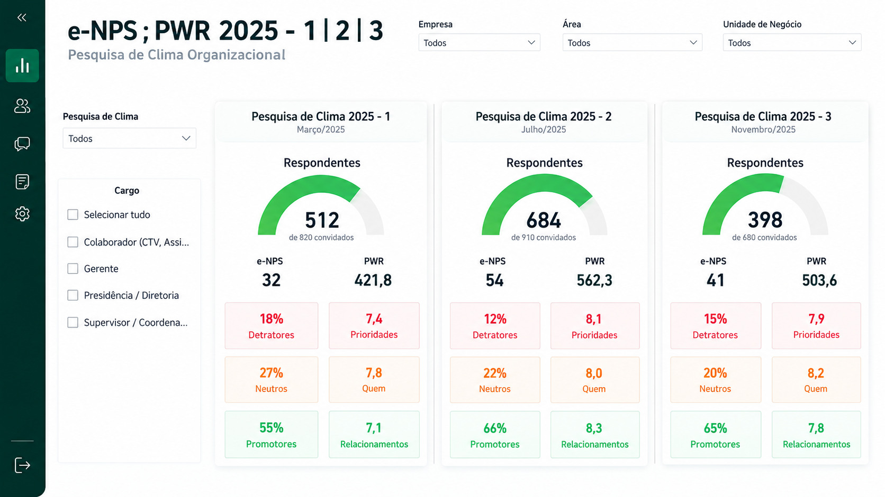

Objetivo da análise
Acompanhar os resultados da pesquisa e facilitar a identificação de temas e grupos que merecem atenção em planos de ação de RH.
Dashboard de pesquisa de clima organizacional que transforma respostas de colaboradores em indicadores de participação, recomendação e percepção do ambiente de trabalho.
Objetivo, organização das informações e principais leituras disponíveis no painel.
Acompanhar os resultados da pesquisa e facilitar a identificação de temas e grupos que merecem atenção em planos de ação de RH.
Consolidação dos resultados de pesquisa e organização de recortes para comparação. O material apresentado não permite confirmar a origem dos dados ou o método de coleta.
Construção de visões de acompanhamento e comparação no Power BI, com indicadores de participação, e-NPS e avaliação de dimensões do clima.
A comparação dos indicadores ajuda a reconhecer dimensões bem avaliadas e pontos de atenção, evitando interpretar uma média geral sem observar diferenças entre grupos.

